Case Study 07 · Reverse Engineering & Injection Molding
Injection Molded Transition Part
Reverse engineering, DFM for injection molding, mold flow analysis, and vendor-partnered tooling
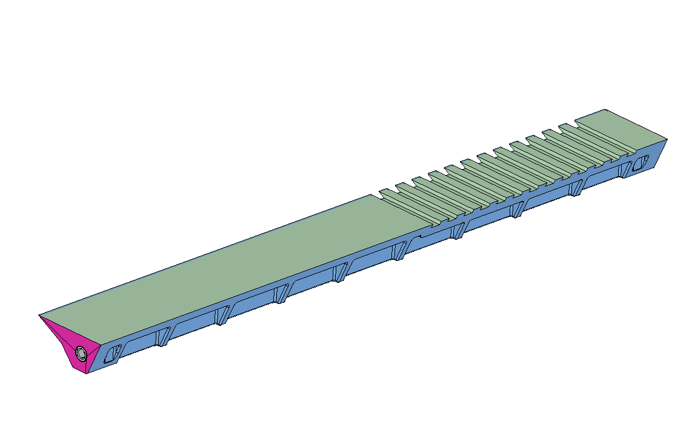
Problem
A wear component acting as a transition "deadplate" between two sections of conveyance on a piece of production equipment was only available as a custom part from the original equipment vendor, at high cost and with a long lead time, with no alternative sourcing option. Because the part wears in normal service and gets replaced on a recurring basis across multiple machines, that cost and lead time repeated continuously — and running out meant either accepting degraded transfers or taking a machine down until a replacement arrived.
My Role & Constraints
I owned the part end to end: measurement, modeling, the drawing package, supplier selection, design for manufacturing, and production validation. The original equipment vendor would not provide dimensioned drawings, so I had no starting data package and had to generate the full design definition myself before any alternative sourcing was possible. The replacement also had to be a true drop-in — no modifications to the surrounding conveyance — and had to hold the transfer gap tightly enough that parts would not tip, stall, or lose orientation crossing it.
Approach & Key Decisions
- Reverse-engineered the part by taking direct physical measurements and reconstructing a complete 3D model and drawing package from scratch, so the design could be quoted, inspected, and re-sourced by any supplier going forward.
- Selected injection molding over machining, since the part is consumed routinely across multiple machines as part of ongoing maintenance — making tooling investment worthwhile for high-volume, low-unit-cost production.
- Partnered with an injection-molding manufacturer through the DFM process, working through gate location, ejector-pin placement, uniform wall thickness (to avoid sink marks, warping, and dimensional inaccuracy), minimum-thickness and draft requirements, and material reduction opportunities to minimize part cost.
- Iterated the design across multiple revisions to refine moldability and fit, proving each round out in CAD and simulation before committing anything to steel.
Design Process
The part went from hand measurements to production in five phases. Each one existed to retire a specific risk while it was still cheap to fix.
Initial CAD Iterations
- Modeled separate infeed and outfeed variants. The two transitions mirror each other but differ in approach angle and in how the knife edge meets the belt, so each needed its own geometry rather than one symmetric part.
- Drove every feature off direct measurement of the existing conveyance — belt height, chain pitch, and the gap the part has to bridge — so the replacement would drop into the machine with no rework.
- Designed an integrated mounting bracket with slotted holes, giving enough adjustment at install to absorb machine-to-machine variation instead of custom shimming every tool.
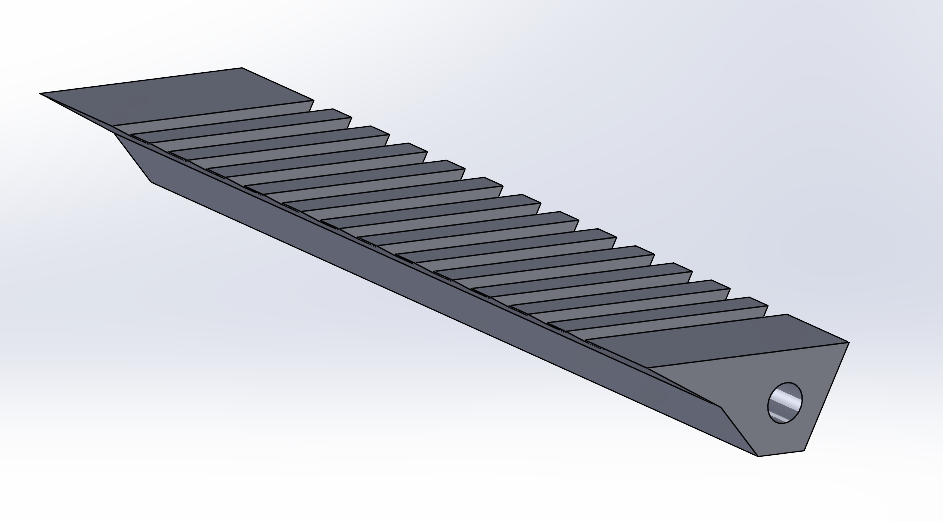
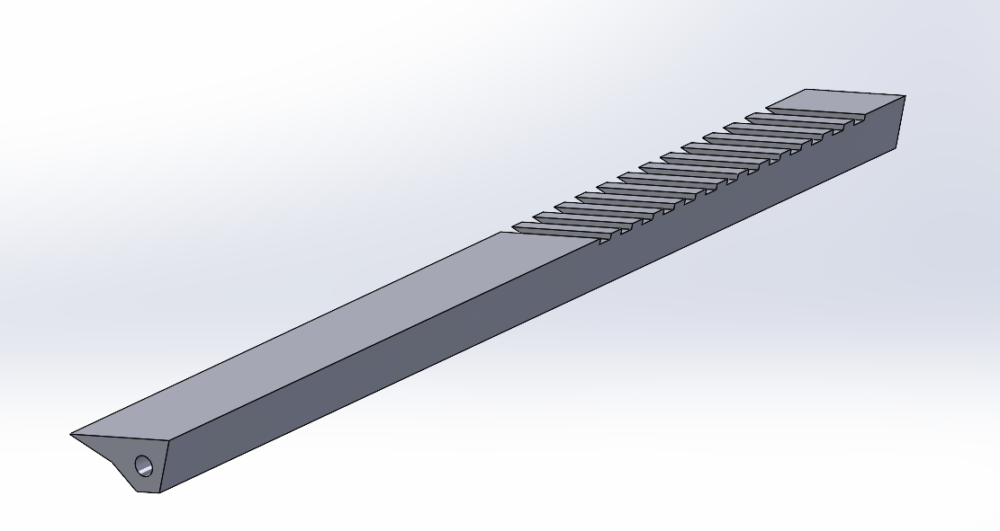
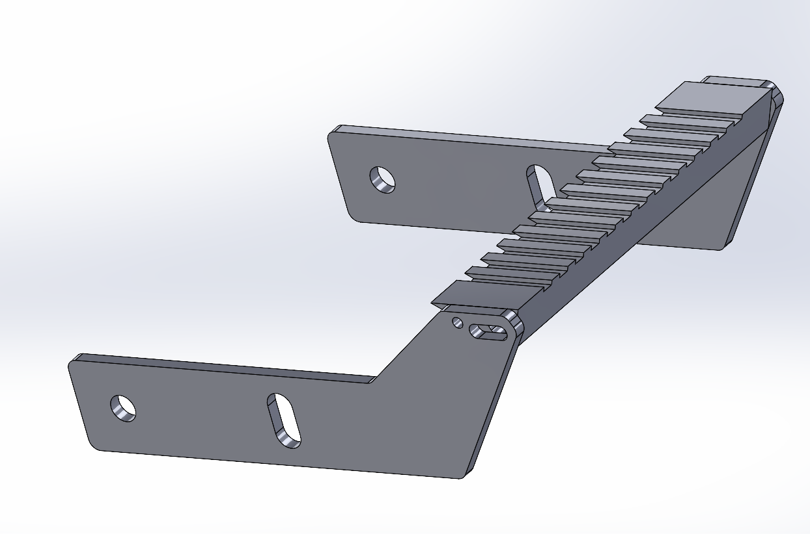
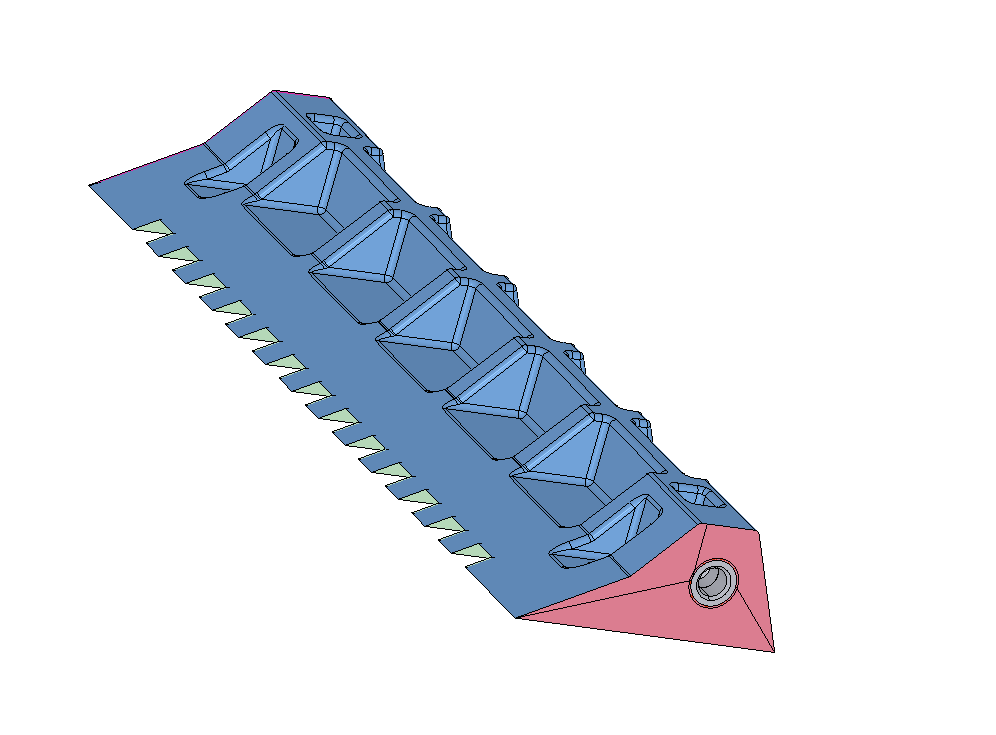
Tolerancing & Drawing Definition
- Produced a full drawing package where none had ever existed, so the part could be competitively quoted and inspected on receipt.
- Defined datums off the features that actually control function and fit — the mounting interface and the running surface — so the part gets measured the same way it gets installed.
- Applied form, orientation, location, and profile tolerances rather than blanket dimensional tolerances, which tells the molder exactly which features matter and leaves the process free everywhere else.
- Toleranced the threaded-insert positions at maximum material condition, so mounting holes stay interchangeable from machine to machine.
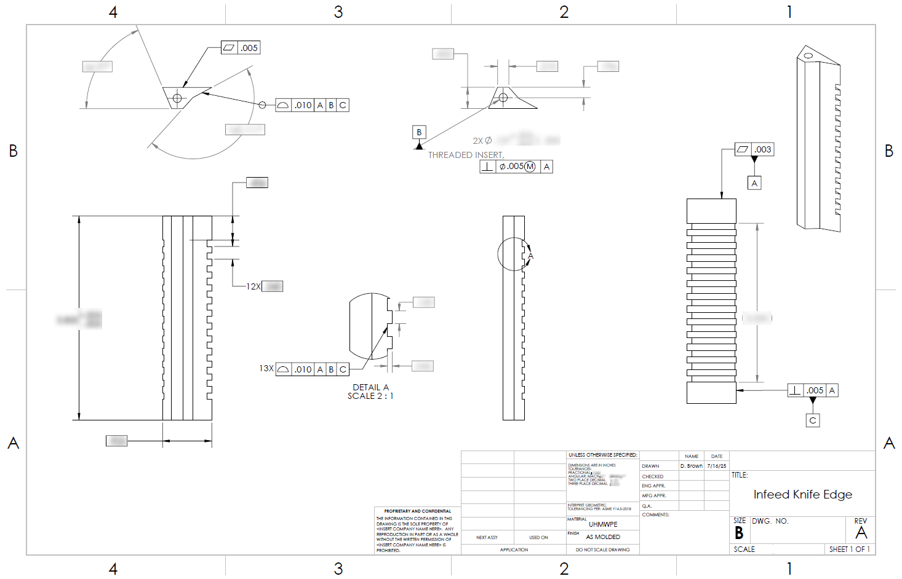
Design for Moldability
- Replaced solid sections with a ribbed structure to keep wall thickness uniform. Even walls cool at an even rate, which is what stops the part from warping as it shrinks.
- Added draft to the side walls so the part releases cleanly from the tool without drag marks or ejector damage on the running surface.
- Cored out the heavy sections underneath the running surface. Thick regions are the main driver of sink marks, internal voids, and uneven shrink, and coring them also cut material per shot — which shows up directly in part cost.
- Added radii where thin walls met at a feathered edge. Those knife-thin transitions are hard to fill, fragile in service, and hard on the tool.
- Re-ran draft and thickness analysis in CAD on every revision, so problems got caught on screen instead of in a quote review or, far worse, in steel.
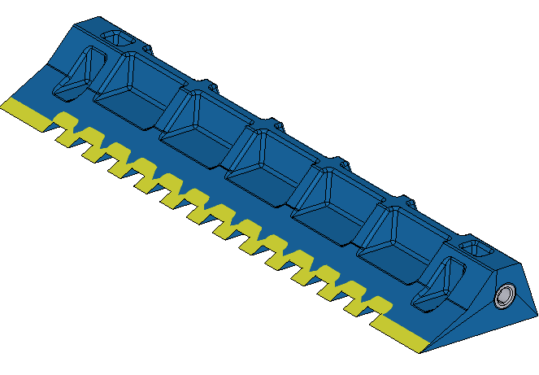
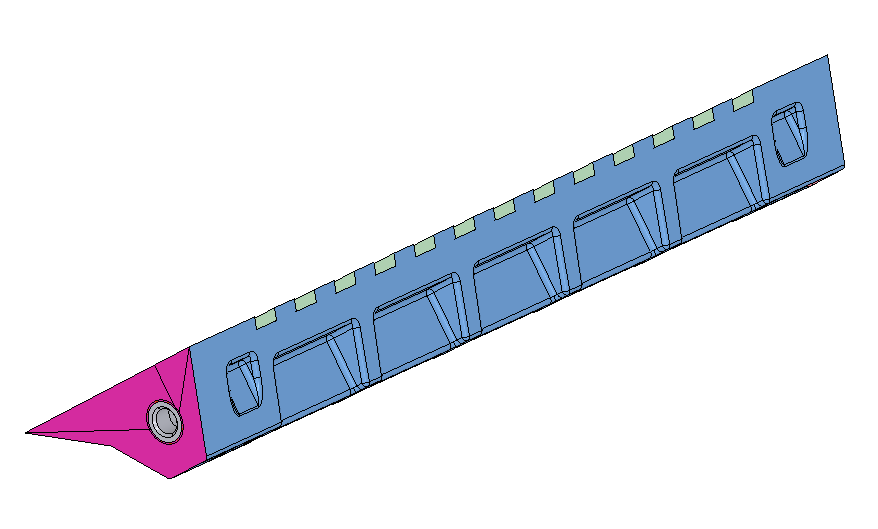
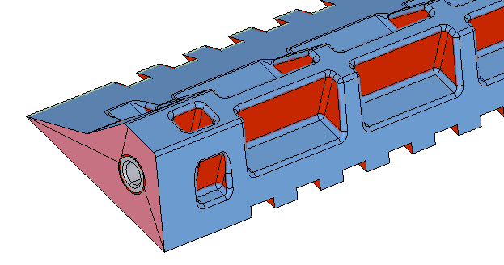
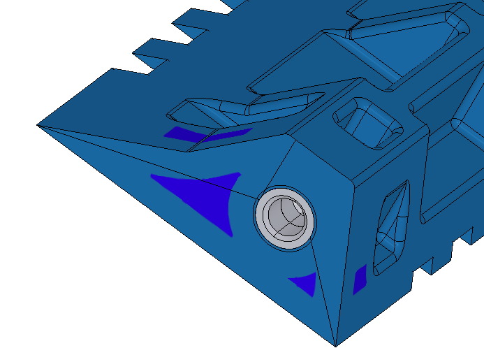
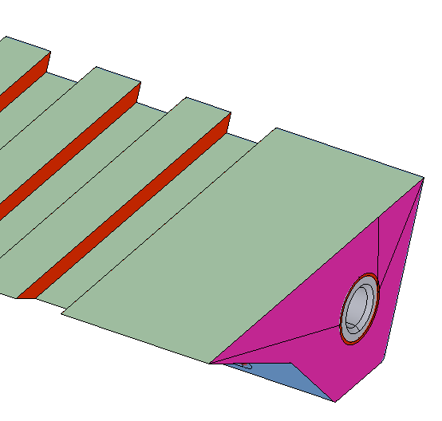
Mold Flow Analysis
- Set gate location with the molder so the melt front reaches the far end of this long, narrow part before it freezes off — avoiding short shots and keeping weld lines off the load-bearing running surface.
- Laid out ejector pins against the flat underside ribs, where the part is stiff enough to be pushed on without dimpling or distorting the finished top surface.
- Added undercut features to mold in bosses for threaded inserts, so the mounting holes survive repeated removal and reinstallation instead of stripping out of the plastic.
- Reviewed the fill simulation with the molder before any tooling was cut. Catching a fill or pressure problem on screen costs a revision; catching it after the tool is machined costs a tool.
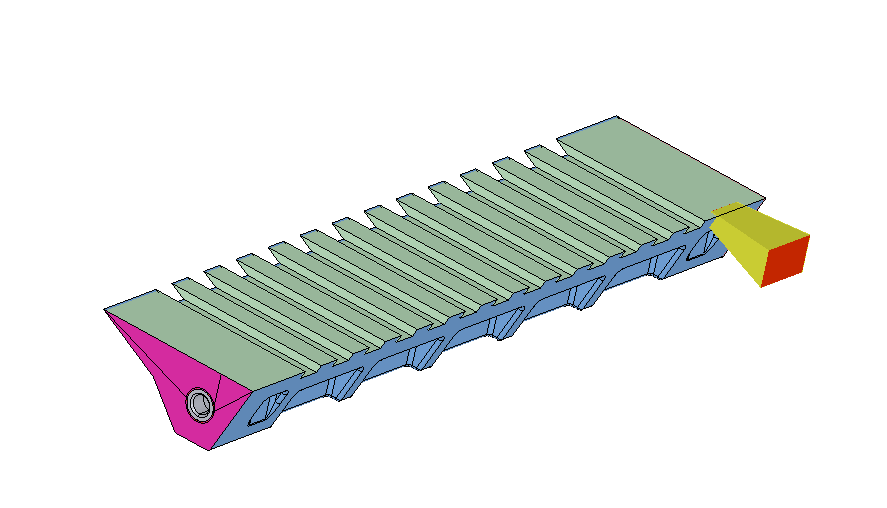
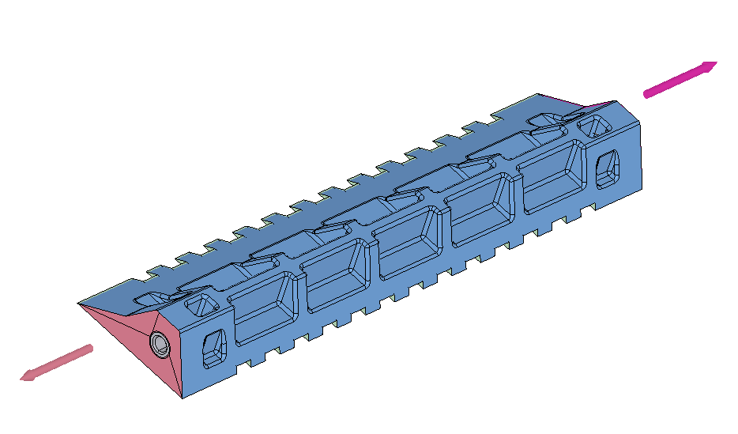
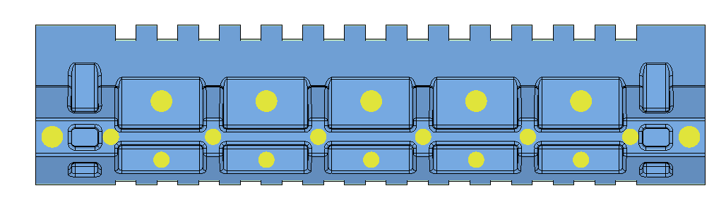
T0/T1 Sample Validation
- Fit-checked T0 and T1 trial samples on the actual machines to confirm the mounting interface, running height, and transfer gap matched what the reverse-engineered model predicted — before signing off on the tool.
- Ran static transfer checks by hand, then dynamic checks at full line rate, confirming parts crossed the transition without tipping, hanging up, or losing orientation.
- Completed a Gage R&R against a golden sample to prove the new part did not disturb weighing repeatability. The transition feeds a checkweigher, so any added drag or contact at the handoff shows up directly as measurement noise.
- Released to production only once the molded part matched the incumbent on both transfer reliability and measurement stability.
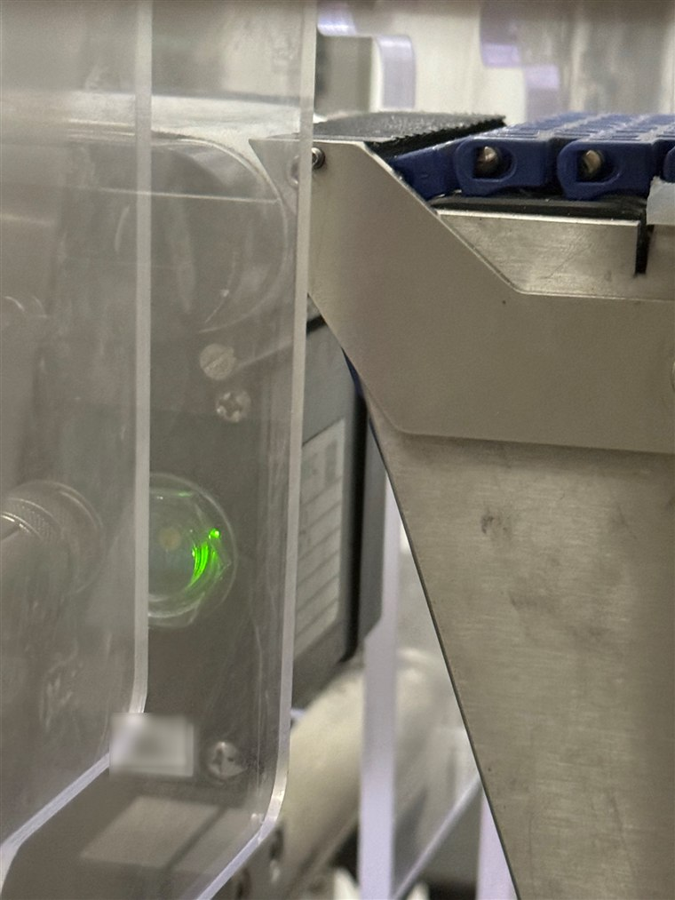
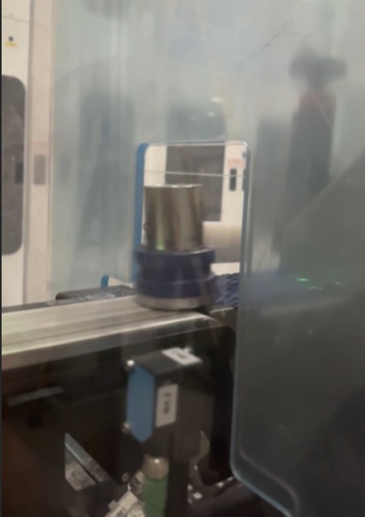
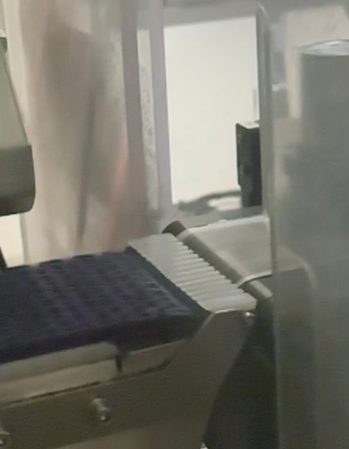